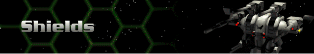
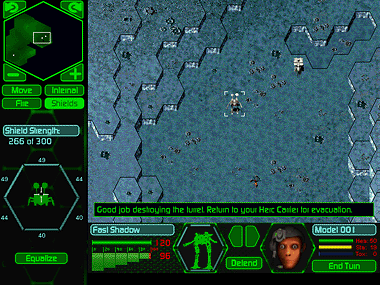

Shields are only controlled from the Shields button. You will see a top down display of the Herc you have selected with a cursor in the center. This default display shows the shields evenly distributed around all sides of the Herc. Click and drag the indicator to redistribute shield strength. The shield strength is indicated by the numbers around the hex and by the brightness of the hex frame. Click the Equalize button to return shields to the default setting. Distribute shield strength to the sides most vulnerable to attack. It’s a good idea to do this before you fire, in the event of automatic return fire.
